Зеленоградск · готовая прогулка
Море и западный берег
Курхаус, бювет, обед в Телеграфе и длинная прогулка к западному пляжу. Финал у станции Зеленоградск-2.
Факты, условия и следующий шагМоре и западный берег
Факты и условия
Море и западный берег
Есть дата проверки
- Проверено
- Автор анализа
- Редакция GoDune.ru
Источники
- Туристский информационный центр: «Курхаус Кранц» · проверено 2026-10-02
- Источник · проверено 2026-10-01
- Информационно-туристический центр Зеленоградска · проверено 2026-10-02
- Источник · проверено 2026-10-01
- Ресторан «Телеграф» · проверено 2026-10-02
- Источник · проверено 2026-10-03
- Источник · проверено 2026-10-03
- OpenStreetMap · проверено 2026-10-06
До и после этой точки
- Курхаус КранцДо этой точки
- Станция Зеленоградск-2Следующий шаг
Остановки по порядку
- 1

Курхаус Кранц
Историческое здание курортной гостиницы в центре Зеленоградска. Удобная архитектурная остановка на пути между городскими улицами и морем.
≈ 20 мин · резерв на остановкуНа карте ↗ - 2

Бювет королевы Луизы
Небольшой ориентир у морской прогулочной части Зеленоградска. Его удобно включать по пути, не строя вокруг него отдельный день.
≈ 15 мин · резерв на остановкуНа карте ↗ - 3

Телеграф
На Курортном проспекте Балтика становится обедом. На вывеске — «Телеграф», в снятом нами меню — килька и уха. Хорошая остановка между старым городом и морем.
≈ 60 мин · резерв на остановкуНа карте ↗ - 4

Западный пляж у Зеленоградска-2
За западными кварталами город раскрывается широким песчаным берегом. Здесь можно остаться у воды, а потом вернуться к электричке тем же путём.
≈ 90 мин · резерв на остановкуНа карте ↗ - 5

Станция Зеленоградск-2
Остановка на западной стороне Зеленоградска. Летом сюда приходит «Морской экспресс», а широкий морской берег остаётся совсем рядом: ТИЦ указывает около 600 метров от платформы.
≈ 5 мин · резерв на остановкуНа карте ↗
Резерв на остановки — около 190 минут, без переходов и ожиданий. Если время точки не задано, для плана отведено 30 минут; длительность посещения выбираете вы.
Условия посещения и источники
Курхаус Кранц: Отель на проспекте
Курхаус на Курортном проспекте, 16, работает как отель; на первом этаже находятся ресторан и пекарня. В городской маршрут можно включить фасад. Проживание, столик и доступ внутрь уточняй отдельно — часы и цены этих услуг здесь пока не проверены.
Источник: Туристский информационный центр: «Курхаус Кранц» · проверено
Бювет королевы Луизы: Где набрать воду
Ищите круглую беседку у пересечения набережной и аллеи Дружбы, рядом с пирсом. Вода подаётся через четыре крана.
Источник: Информационно-туристический центр Зеленоградска · проверено
Бювет королевы Луизы: Вода из бювета
Воду можно набрать бесплатно. Часы её подачи на странице турцентра не указаны.
Источник: Информационно-туристический центр Зеленоградска · проверено
Телеграф: в каталоге нет условия посещения с датированным источником; не подтверждено на дату сборки .
Западный пляж у Зеленоградска-2: в каталоге нет условия посещения с датированным источником; не подтверждено на дату сборки .
Станция Зеленоградск-2: в каталоге нет условия посещения с датированным источником; не подтверждено на дату сборки .